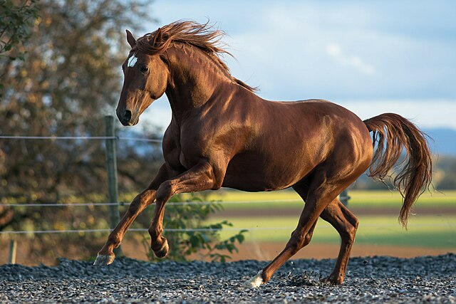
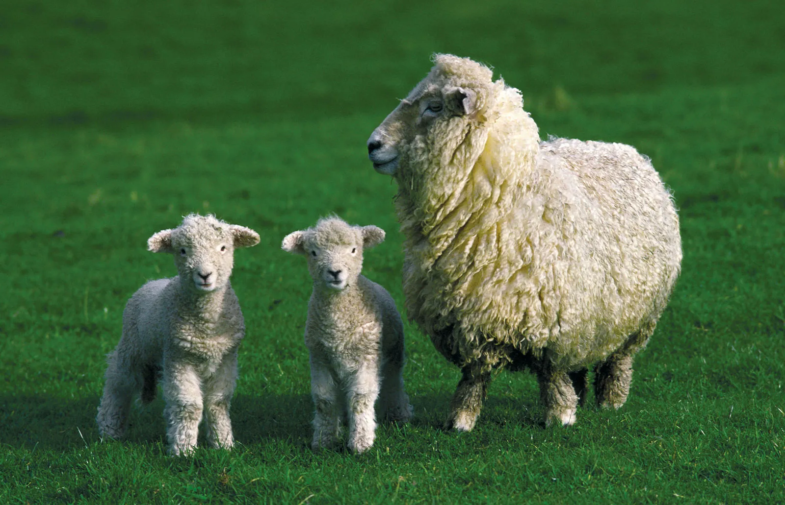

Horses
1. Horses can’t breathe through their mouth Horses are obligate nasal breathers. This means that they are unable to breathe through their mouth as humans can. Horses can only breathe through their nose.
Sheep
Sheep have a great sense of smell, and have special scent glands located in front of their eyes and between the digits of their hooves to help them out! Mothers learn to identify their babies by their unique scent
Dogs
The smaller breeds of dogs tend to live the longest. Yorkshire terriers, Chihuahuas, Dachshunds, Toy Poodles and Lhasa Apsos are the breeds who typically live the longest with these averaging a lifespan of up to 20 years